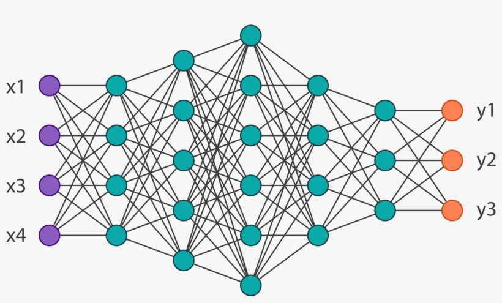

Keyboard shortcuts:
N/СпейсNext Slide
PPrevious Slide
OSlides Overview
ctrl+left clickZoom Element
If you want print version => add '
?print-pdf' at the end of slides URL (remove '#' fragment) and then print.
Like: https://wwwcourses.github.io/...CourseIntro.html?print-pdf
Introduction to Deep Learning
Created for

Iva E. Popova, 2024,

Introduction to Deep Learning
Overview
- Deep Learning is a subset of Machine Learning that involves training artificial neural networks to perform complex tasks.
- Deep learning is called so because it involves the use of deep neural networks, which are composed of multiple hidden layers.
- These networks can be very deep, with dozens or even hundreds of layers, which allows them to learn highly complex representations of data.
- Deep Learning has gained immense popularity in recent years due to its ability to achieve state-of-the-art performance on a wide range of tasks such as image recognition, natural language processing, speech recognition, and more.
- Deep Neural Networks are typically trained using large datasets and require a significant amount of computing power. However, with the availability of powerful GPUs and frameworks such as TensorFlow and PyTorch, training Deep Neural Networks has become more accessible to a wider audience.
Applications
How it works
- Unlike traditional Machine Learning algorithms that rely on hand-crafted features, Deep Learning algorithms can automatically learn features from raw data by stacking multiple layers of artificial neurons.
- For example, let's say we wanted to build a system to recognize images of cats and dogs. In the first layer of the neural network, the neurons might learn to detect low-level features like edges and corners. In the next layer, the neurons might learn to detect higher-level features like fur and whiskers. In the final layer, the neurons might learn to classify the images as either cats or dogs based on the presence of these features.
Deep Learning Advantages
- High accuracy: DL models can achieve high accuracy on a wide range of tasks, including image recognition, speech recognition, natural language processing, and more. They can learn complex representations of data that other machine learning models may struggle with.
- Feature extraction: DL models can automatically learn useful features from raw data, eliminating the need for feature engineering, which can be time-consuming and error-prone.
- Flexibility: DL models are highly flexible and can be used for a wide range of tasks, from classification and regression to image and speech synthesis.
- Scalability: DL models can scale up to handle large datasets and complex architectures. This makes it possible to build and train models that would be impossible to develop using traditional machine learning techniques.
- Adaptability: DL models can adapt to new data and new situations, making them useful for applications that need to respond to changing circumstances.
- Automation: DL models can automate complex tasks, such as speech recognition or image recognition, making it possible to build intelligent systems that can perform tasks that would normally require human intervention.
- Interdisciplinary: DL is an interdisciplinary field that draws on expertise from computer science, mathematics, statistics, and neuroscience, making it a rich and vibrant area of research and development.
Deep Learning Disadvantages
- Black box nature: DL models can be difficult to interpret and understand. That makes it difficult to diagnose errors or understand how the model is making decisions.
- Large amounts of data: DL requires large amounts of data to train models effectively. This can be challenging for companies or organizations that don't have access to large datasets.
- Computational resources: DL requires significant computational resources, including high-end CPUs, GPUs, and specialized hardware like TPUs. This can be expensive and can limit the ability of some organizations to use DL effectively.
- Overfitting: DL models can be prone to overfitting, which means that they may perform well on training data but poorly on new data.
- Requires specialized knowledge: DL developers must have deep understanding of programming, mathematics, and statistics
- Limited data efficiency: DL is not efficient with smaller datasets and can overfit quickly. This can lead to poor model generalization and high variance.
- Slow training time: DL models can take a long time to train, especially when working with large datasets or complex architectures
Introduction to Keras and TensorFlow
Introduction to Keras and TensorFlow
- Keras is an open-source software library that provides a Python interface for ANN. Keras acts as an interface for the TensorFlow library
- It was developed by Francois Chollet -a Google engineer, and was released in 2015
- Keras is a high-level API that allows users to build and train deep learning models in a user-friendly and modular way
- Keras supports both convolutional and recurrent neural networks, as well as a combination of the two
- Keras can be used for a variety of tasks, such as image classification, text classification, sentiment analysis, and more.
What is Keras?
Keras Features
- Simplicity: Keras provides a simple and intuitive API that makes it easy to build and train deep learning models
- Flexibility: Keras is highly modular and can be easily extended and customized.
- Speed: Keras is designed to be fast and efficient, which makes it an excellent choice for large-scale deep learning projects.
- Support for various neural network types: Keras supports both convolutional and recurrent neural networks, as well as a combination of the two.
- Pre-built layers and models: Keras provides a large number of pre-built layers and models, which makes it easy to get started with deep learning.
- Easy to understand and use: Keras is designed to be user-friendly and easy to understand, which makes it an excellent tool for both beginners and experienced developers.
- Distributed training: Keras allows use of distributed training of deep-learning models on clusters of Graphics processing units (GPU) and tensor processing units (TPU)
Keras backends
- Keras does not handle itself low-level operations such as tensor products, convolutions and so on. Instead, it relies on a specialized, well-optimized tensor manipulation library to do so, serving as the "backend engine" of Keras.
- Keras modular design allows several different backend engines to be plugged seamlessly.
- Currently (February, 2023), Keras has two backend implementations available: the TensorFlow backend and the Theano backend.
- TensorFlow is an open-source symbolic tensor manipulation framework developed by Google, Inc.
- Theano is an open-source symbolic tensor manipulation framework developed by LISA/MILA Lab at Université de Montréal.
Keras Advantages
- Simplicity: Keras is designed to be easy to use, with a simple and intuitive API that abstracts away much of the complexity of deep learning.
- Flexibility: Keras offers a high degree of flexibility, with support for a wide range of architectures, including convolutional neural networks, recurrent neural networks, and more.
- Modularity: Keras is highly modular, with support for reusable building blocks like layers and models, making it easy to create complex architectures with minimal code.
- Ease of use: Keras is designed to be easy to use, with high-level APIs that make it easy to build and train deep learning models quickly and efficiently.
- Compatibility: Keras can run on top of multiple backends, including TensorFlow, Theano, and CNTK, giving developers the flexibility to choose the backend that best meets their needs.
- Visualization: Keras includes powerful visualization tools, such as TensorBoard, that make it easy to explore and understand the behavior of deep learning models.
- Community: Keras has a large and active community of developers, with extensive documentation, tutorials, and resources available online.
Keras Disadvantages
Keras is an abstraction layer over TensorFlow , designed to be easy to use and beginner friendly. While this is a plus for new developers, it leads to some disadvantages:
- Limited flexibility: Keras have less control over the underlying architecture and may not be able to customize it as much as you would like
- Less transparent debugging: Using Keras is harder to understand what is happening under the hood when debugging. This can be frustrating for developers who want more visibility into the internals of their models.
- Less efficient performance: Because Keras is built on top of other deep learning libraries like TensorFlow or Theano, it may not be as optimized for performance as other libraries that are designed specifically for performance.
- Limited support for research: While Keras is a great tool for building and deploying production-grade models, it may not be the best choice for cutting-edge research. This is because Keras has a limited set of modules and may not support the latest research breakthroughs as quickly as other, more research-focused libraries.
TensorFlow Overview
- TensorFlow is a free and open-source software library for machine learning and artificial intelligence.
- It is developed by Google Brain Team in 2015.
- TensorFlow uses tensors to represent inputs, outputs, and intermediate data structures in neural networks
- TensorFlow supports a wide range of platforms, including mobile devices, desktops, and servers
- Lot's of pre-build tools
- tools to process and load data.
- A collection of ready-to-use datasets
- pre-trained models
- Deploy models on-device, in the browser, on-prem, or in the cloud
- Implement MLOps
TensorFlow Running Platforms
TensorFlow can be run on three different processor platforms, with the main difference being the speed at which your neural network will be trained. Each platform has different hardware requirements and offers different performance:
- CPU - any modern computer can run this version, but it offers the slowest training speeds.
- TPU - only available currently on Google’s Colaboratory (Colab) platform, Tensor Processing Units (TPUs) offer the highest training speeds.
- GPU - most high end computers feature a separate Graphics Processing Unit (GPU) from Nvidia or AMD that offer training speeds much faster than CPUs, but not as fast as TPUs.
TensorFlow Advantages
- Scalability: TensorFlow is highly scalable and can be used to train models on large datasets or complex architectures.
- Versatility: TensorFlow can be used for a wide range of tasks, from image and speech recognition to natural language processing and more.
- Performance: TensorFlow is highly optimized for performance, with support for parallel processing, distributed computing, and hardware acceleration with GPUs and TPUs.
- Community: TensorFlow has a large and active community of developers, with extensive documentation, tutorials, and resources available online.
- Flexibility: TensorFlow offers a high degree of flexibility, with support for a wide range of architectures, including convolutional neural networks, recurrent neural networks, and more.
- Visualization: TensorFlow includes powerful visualization tools, such as TensorBoard, that make it easy to explore and understand the behavior of deep learning models.
- Ease of use: TensorFlow is designed to be easy to use, with high-level APIs like Keras that abstract away much of the complexity of deep learning.
TensorFlow Disadvantages
- Steep learning curve: TensorFlow requires a solid understanding of programming concepts and mathematical concepts like linear algebra and calculus.
- Low-level programming: TensorFlow operates at a low level of abstraction, which means that developers need to write a lot of code to achieve even simple tasks. This can be challenging and time-consuming for developers, who are used to working at a higher level of abstraction
- Boilerplate code: TensorFlow can require a lot of boilerplate code to set up and configure models, which can be time-consuming and error-prone. This can make it difficult to quickly prototype and test new models.
- Computational overhead: TensorFlow can be computationally expensive, especially when running on large datasets or complex models
- Lack of flexibility: TensorFlow is a powerful library, but it can be inflexible when it comes to modifying or customizing models.
- Debugging challenges: Debugging TensorFlow models can be challenging, especially when working with large and complex models. This is because errors can be difficult to isolate and diagnose, which can make the debugging process time-consuming and frustrating.
Keras installation and usage
Keras installation and usage
- Because Keras is a high level API for TensorFlow we will need to have the TensorFlow package installed:
- Reference: Install TensorFlow 2
- Using Keras in Python:
# TensorFlow requires the latest pip
pip install --upgrade pip
# Current stable release for CPU and GPU
pip install tensorflow
from tensorflow import keras
Examples in Python
- Example 1: Child/Adult Classification: Keras_Intro.ipynb